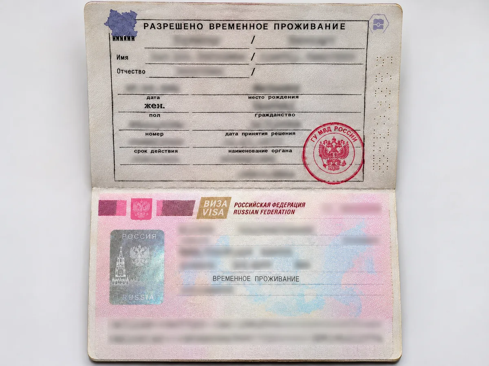

Prüfen Sie, ob das Programm für Sie geeignet ist
Das Programm richtet sich an ausländische Staatsangehörige, die traditionelle russische Werte teilen und aus dem Staat ihrer Staatsangehörigkeit oder ihres ständigen Wohnsitzes nach Russland ziehen möchten. Die Liste der Staaten und Gebiete ist in der Regierungsanordnung Nr. 2560-r festgelegt. Bei der Antragstellung müssen Sie Ihre Beweggründe für den Umzug gemäß Erlass 702 darlegen.
Auch ausländische Staatsangehörige mit ständigem Wohnsitz in einem der aufgeführten Staaten können teilnehmen, selbst wenn sie eine andere Staatsangehörigkeit besitzen.
Für die Vorprüfung benötigen wir Angaben zu Ihrer Staatsangehörigkeit, Ihrem ständigen Wohnsitz, früheren Aufenthalten in Russland und Ihrer familiären Situation. Die Staatsangehörigkeit eines aufgeführten Staates führt nicht automatisch zur Erteilung eines Aufenthaltsstatus: Sie müssen weiterhin die erforderlichen Unterlagen vorbereiten und die migrationsrechtlichen Verfahren durchlaufen. Nach unserer Erfahrung ist dies jedoch der am besten planbare Weg zur RVP.
Wenn Sie sich bereits rechtmäßig in Russland aufhalten, können Sie das Programm ebenfalls nutzen, etwa mit einem Arbeits- oder Touristenvisum. Das Antragsverfahren hängt von Ihren Unterlagen und der Aufenthaltsregion ab.
Unser Ansatz: Planen Sie zuerst den Umzug und den zeitlichen Ablauf. Beantragen Sie anschließend das Visum und buchen Sie die Reise. So arbeiten Sie ohne unnötige Verzögerungen auf die Erteilung der RVP hin.
Visum beantragen und Unterlagen vorbereiten
Erlass 702 sieht für die Einreise ein gewöhnliches Privatvisum zur einmaligen Einreise mit einer Gültigkeit von drei Monaten vor. Bereiten Sie die Unterlagen sorgfältig vor, geben Sie die geplanten Reisedaten an und beantragen Sie den passenden Zeitraum. Das russische Konsulat legt die Gültigkeitsdaten des Visums fest.
Besonders wichtig: Besorgen Sie die Bescheinigung über das Nichtvorliegen von Vorstrafen noch vor der Reise. Für einen RVP-Antrag in Russland gilt die Bescheinigung drei Monate ab dem Ausstellungsdatum. Soweit erforderlich, muss das Dokument mit einer Apostille versehen oder auf andere vorgesehene Weise legalisiert werden. Eine notariell beglaubigte russische Übersetzung können Sie nach der Einreise in Russland anfertigen lassen. Ab dem 1. Februar 2027 ändern sich die Anforderungen an diese Bescheinigungen. Grundsätzlich benötigen Sie dann Papierbescheinigungen aus dem Staat Ihrer Staatsangehörigkeit und dem Staat Ihres ständigen Wohnsitzes, die höchstens drei Monate vor der Antragstellung ausgestellt wurden. Gesetzliche Ausnahmen bleiben unberührt.
Besondere Aufmerksamkeit gilt elektronischen Bescheinigungen und elektronischen Apostillen. Wenn die Bescheinigung in Ihrem Land nur elektronisch ausgestellt wird, besprechen Sie die Vorbereitung vorab mit einem auf russisches Migrationsrecht spezialisierten Juristen. Die Überprüfung der Echtheit solcher Dokumente kann sich je nach Region Russlands unterscheiden. Klären Sie mögliche Schwierigkeiten am besten noch vor der Abreise.
Bereiten Sie Ihren Reisepass, den Wohnsitznachweis, die Erklärung Ihrer Beweggründe für den Umzug und das Visumantragsformular vor. Prüfen Sie die Anforderungen des Konsulats, bei dem Sie den Antrag stellen möchten.
Sie benötigen außerdem eine Krankenversicherung. Wir können diese über unseren offiziellen Partner, die Versicherungsgesellschaft Soglasie, vermitteln.

Praktischer Rat: Erstellen Sie zunächst einen Maßnahmen- und Zeitplan, der das Ausstellungsdatum der Bescheinigung, den Konsulatstermin und die Antragstellung beim MWD berücksichtigt.
RVP über das Konsulat beantragen
Sie können eine RVP über ein russisches Konsulat in Ihrem Wohnsitzstaat beantragen. Das Gesetz sieht diese Möglichkeit vor, sie wird jedoch vergleichsweise selten genutzt. In unserer Praxis haben wir solche Anträge überwiegend über das russische Konsulat in Frankreich begleitet.
Das Konsulat nimmt die Unterlagen entgegen und leitet sie an das russische Innenministerium (MWD) weiter, das über Ihren Antrag entscheidet. Wählen Sie daher vorab die Region Ihres künftigen ständigen Wohnsitzes.
Die ärztliche Untersuchung, die Erfassung der Fingerabdrücke und die fotografische Erfassung erfolgen nach der Einreise nach Russland.
Die Antragstellung über ein Konsulat kann das Gesamtverfahren um etwa zwei Monate verlängern. Manchmal ist sie dennoch günstiger: Während das MWD den Antrag prüft, können Sie Ihre Angelegenheiten im Ausland abschließen und erst näher am erwarteten Entscheidungszeitpunkt einreisen, statt in Russland zu warten.
Dieses Verfahren weist praktische Besonderheiten auf. Wir empfehlen die Begleitung durch einen erfahrenen Juristen für russisches Migrationsrecht.
Ankunft in Russland: Was ist zuerst zu tun?
Willkommen in Russland!
Erledigen Sie nach der Ankunft zügig die migrationsrechtlichen Formalitäten, damit die Beantragung der RVP möglich bleibt.
- Nehmen Sie bei der Einreise Ihre Migrationskarte entgegen und bewahren Sie sie sorgfältig auf. Verlieren Sie sie nicht.
- Erledigen Sie die migrationsrechtliche Registrierung am Aufenthaltsort (oft einfach als Registrierung bezeichnet). Bei einem Hotelaufenthalt reicht die Hotelverwaltung die Meldung spätestens am folgenden Arbeitstag ein; bei einer Mietwohnung beträgt die allgemeine Frist sieben Arbeitstage, und die aufnehmende Seite reicht die Meldung üblicherweise ein. Es kommt nicht nur auf die Einreichung der Meldung an, sondern auch auf die Bestätigung ihrer Annahme durch das MWD: den abtrennbaren Abschnitt des Meldeformulars oder eine elektronische Bestätigung.
- Bereiten Sie notariell beglaubigte Übersetzungen ausländischer Dokumente vor.
- Wählen Sie die Region, in der Sie tatsächlich leben und den Antrag stellen möchten.
- Beantragen Sie bei Bedarf die Sozialversicherungsnummer (SNILS), richten Sie den Zugang zum staatlichen Dienstleistungsportal Gosuslugi ein und kümmern Sie sich um Mobilfunk und Bankangelegenheiten. Dies sind nützliche praktische Schritte, aber keine allgemein geltenden Voraussetzungen für die Erteilung einer RVP.

Medizinische Unterlagen, Übersetzungen und Antrag
In dieser Etappe bereiten wir den RVP-Antrag vor, prüfen ausländische Dokumente und Übersetzungen, begleiten die ärztliche Untersuchung, die Beantragung erforderlicher Identifikationsnummern und weitere Verfahren.
Die ärztliche Untersuchung für die RVP muss in Russland durchgeführt werden, und zwar bei einer zugelassenen medizinischen Einrichtung. Wenn Sie die RVP über ein russisches Konsulat beantragt haben, müssen Sie die Untersuchung innerhalb von 30 Kalendertagen nach der Einreise nach Russland absolvieren. Bei nachweislich berechtigten Hinderungsgründen ist sie spätestens innerhalb von 30 Kalendertagen nach deren Wegfall durchzuführen.
Ermitteln Sie in der gewählten Region die Adresse und Öffnungszeiten der medizinischen Einrichtung und lassen Sie die vorgeschriebene Erfassung der Fingerabdrücke und die fotografische Erfassung durchführen. Parallel unterstützen wir Sie bei der Beantragung der Sozialversicherungsnummer (SNILS), der Steueridentifikationsnummer (INN) und weiterer Dokumente für das Leben in Russland.

Wir prüfen, ob die Unterlagen den Anforderungen entsprechen, bevor Sie den Antrag beim MWD stellen: Abgelaufene Bescheinigungen, ungenaue Übersetzungen und Antragsfehler kosten häufig Zeit und können die Aussicht auf eine positive Entscheidung beeinträchtigen.
RVP beim russischen Innenministerium beantragen
Reichen Sie den RVP-Antrag bei der zuständigen territorialen Dienststelle des MWD in der von Ihnen als Wohnort gewählten Region ein. Die Antragstellung setzt vollständige Unterlagen und die Einhaltung der migrationsrechtlichen Vorschriften voraus. Wir begleiten Antragsteller und unterstützen die Kommunikation mit den zuständigen Amtsträgern.
Die föderale Gesetzgebung gilt einheitlich in ganz Russland. Unsere Erfahrung zeigt jedoch, dass sich ihre praktische Anwendung regional unterscheiden kann.
Die Bestätigung der Annahme Ihres Antrags durch das MWD gehört zu den wichtigsten Dokumenten. Artikel 5 Absatz 2 des Föderalen Gesetzes Nr. 115-FZ ermöglicht es Ihnen, die Entscheidung nach Ablauf Ihres ursprünglichen Visums rechtmäßig in Russland abzuwarten, sofern das MWD den RVP-Antrag und die erforderlichen Unterlagen angenommen hat. Dieser fortdauernde rechtmäßige Aufenthalt muss ordnungsgemäß dokumentiert werden; die entsprechenden Nachweise müssen eingeholt werden. Das Dokumentationsverfahren kann sich je nach Region und Visumkategorie unterscheiden.
Im regulären Verfahren für mit einem Visum eingereiste Antragsteller beträgt die gesetzliche Entscheidungsfrist bis zu vier Monate. In der Praxis kann der gesamte Ablauf von der Vorbereitung und Einreichung der Unterlagen bis zur Entscheidung zwei bis sechs Monate dauern. Planen Sie den zeitlichen Ablauf Ihres Umzugs daher frühzeitig.

Nach Erhalt der RVP: Was ändert sich?
Mit der Erteilung der RVP erhalten Sie den rechtmäßigen Status eines vorübergehend in Russland wohnenden ausländischen Staatsangehörigen. Die Genehmigung gilt in der Regel drei Jahre. Sie erhalten Anspruch auf die obligatorische Krankenversicherung (OMS) und können arbeiten, studieren, unternehmerisch tätig sein, Immobilien erwerben und investieren.
Dadurch können Sie Ihr Leben, Ihre Arbeit und Ihre Geschäftstätigkeit in Russland im Rahmen Ihres Status planen. Die damit verbundenen Pflichten bleiben jedoch bestehen.

„Menschen kommen mit ganz unterschiedlichen Plänen zu uns: Familien mit Kindern und Menschen, die in Russland ihre Liebe gefunden haben; Unternehmer und künftige Landwirte; hochqualifizierte Fachkräfte und Studierende; Menschen, die gern in Russland leben und arbeiten; und diejenigen, die sich einfach ein Leben in Russland aufbauen und das Land besser kennenlernen möchten. Ich wollte das Programm verständlich erklären, seine Möglichkeiten aufzeigen und vor Fehlern warnen, die den Umzug erschweren können. Ich kann für Sie eine individuelle Migrationsstrategie entwickeln und Sie bei jedem vereinbarten rechtlichen Schritt begleiten.“
Lev Vtiurin
Gründer von SalutRussie · über 20 Jahre juristische Praxis
Häufige Fragen zum Umzug nach Russland nach Erlass 702
Planen Sie einen Umzug nach Russland?
Teilen Sie uns Ihre Staatsangehörigkeit, Ihren Wohnsitzstaat, Ihre familiäre Situation und den geplanten Umzugstermin mit. Wir helfen Ihnen, rechtliche Möglichkeiten, erforderliche Unterlagen und wesentliche Risiken zu erkennen, bevor Kosten entstehen.
Beratung zu Erlass 702 anfragen →Rechtsgrundlagen und ausführlicher Leitfaden
- Erlass 702 des Präsidenten der Russischen Föderation vom 19. August 2024.
- Regierungsanordnung Nr. 2560-r vom 17. September 2024 – Liste der Staaten.
- Föderales Gesetz Nr. 115-FZ vom 25. Juli 2002 „Über die Rechtsstellung ausländischer Staatsangehöriger in der Russischen Föderation“.
- Anordnungen des russischen Innenministeriums zur Einreichung und Prüfung der RVP-Unterlagen.
- Föderales Gesetz Nr. 241-FZ vom 26. Juli 2026
- Föderales Gesetz Nr. 314-FZ vom 4. August 2026
Autor: Lev Vtiurin, Jurist für russisches Migrationsrecht, juristische Praxis seit 2005.
Eine ausführliche rechtliche Analyse finden Sie in unserem Fachbeitrag „RVP nach Erlass 702: Voraussetzungen, Unterlagen, Fristen und Änderungen im Jahr 2027“. Diese Seite erläutert den praktischen Ablauf des Umzugs und der rechtlichen Begleitung.